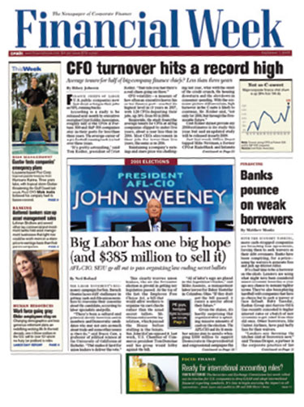
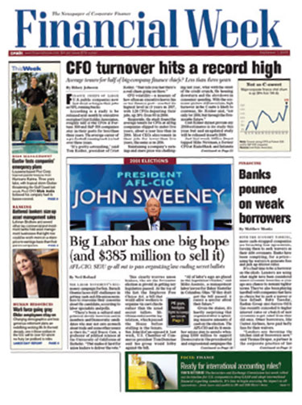

Skip Navigation Markets Pre-Markets U.S. Markets Europe Markets China Markets Asia Markets World Markets Currencies Cryptocurrency Futures & Commodities Bonds Funds & ETFs Business Economy Finance Health & Science Media Real Estate Energy Transportation Industrials Retail Wealth Life Small Business Investing Invest In You Personal Finance Financial Advisors Trading Nation Options Action ETF Street Buffett Archive Earnings Trader Talk Tech Cybersecurity Enterprise Internet Media Mobile Social Media Venture Capital Tech Guide Politics White House Policy Defense Congress 2020 Elections Europe Politics China Politics Asia Politics World Politics CNBC TV Live Audio Latest Video Top Video CEO Interviews Europe TV Asia TV Digital Originals Watchlist PRO PRO News PRO Live Menu Make It Select USA INTL Search quotes, news & videos SIGN IN Markets Pre-Markets U.S. Markets Europe Markets China Markets Asia Markets World Markets Currencies Cryptocurrency Futures & Commodities Bonds Funds & ETFs Business Economy Finance Health & Science Media Real Estate Energy Transportation Industrials Retail Wealth Life Small Business Investing Invest In You Personal Finance Financial Advisors Trading Nation Options Action ETF Street Buffett Archive Earnings Trader Talk Tech Cybersecurity Enterprise Internet Media Mobile Social Media Venture Capital Tech Guide Politics White House Policy Defense Congress 2020 Elections Europe Politics China Politics Asia Politics World Politics CNBC TV Live Audio Latest Video Top Video CEO Interviews Europe TV Asia TV Digital Originals Watchlist PRO PRO News PRO Live Menu EU ASIA US OIL BONDS ASIA FX EU FX GOLD --- --- --- --- --- --- --- --- --- --- --- --- --- --- --- European markets retreat amid choppy trade, with virus surge in focus Quick Links Quick Links Coronavirus latest U.S. futures China's IPO rush Bullish on emerging markets AstraZeneca vaccine Biggest IPO ever
BP beats third-quarter estimates and swings back to profit on improving oil demand
European markets retreat amid choppy trade, with virus surge in focus What a Biden election win could mean for Ireland HSBC's Hong Kong shares jump 5% after third-quarter earnings beat estimates CNBC LIVE Live TV | Live AudioLatest News
1 Hour Ago BP beats third-quarter estimates and swings back to profit 1 Hour Ago European markets retreat amid choppy trade, with virus surge in focus 2 Hours Ago What a Biden election win could mean for Ireland 2 Hours Ago Ant Group closes Hong Kong book early due to strong demand for its record IPO 4 Hours Ago Chinese companies are leading the global IPO rush amid a 'flight from uncertainty' 4 Hours Ago The world needs common travel protocols, Dubai Airports CEO says 5 Hours Ago Japan yen won't strengthen significantly unless there's a 'negative shock': Strategist 6 Hours Ago HSBC's Hong Kong shares jump 5% after third-quarter earnings beat estimates 8 Hours Ago A Biden win would bolster American Electric Power's clean energy plans, CEO says 9 Hours Ago Supreme Court won't revive 6-day ballot deadline extension in Wisconsin 9 Hours Ago Charles Schwab to lay off 1,000 workers following merger with TD Ameritrade 9 Hours Ago Asia-Pacific shares mixed; HSBC shares in Hong Kong soar as earnings beat expectations 10 Hours Ago Cramer's lightning round: Nordstrom is 'very, very tough stock to own' 10 Hours Ago Jim Cramer makes a case for Union Pacific to acquire Kansas City Southern 10 Hours Ago Jim Cramer identifies five investment themes for a 'rocky week' on Wall Street 10 Hours Ago Stock futures rise slightly after market sell-off amid uptick in Covid cases 11 Hours Ago Former Goldman Sachs president Harvey Schwartz makes late big donation to Joe Biden 12 Hours Ago Industrials lead market sell-off, but these stocks could be about to bounce back 12 Hours Ago Stocks making the biggest moves after hours: Twilio, Chegg, AIG and more 12 Hours Ago Uber, Lyft spending big on Facebook ads to protect their business in California 12 Hours Ago Tom Lee sees 'big, big upside' for stocks after near-term uncertainty fades 12 Hours Ago These are your 2021 401(k) and IRA contribution limits 13 Hours Ago Facebook says it helped 4.4 million people register to vote in the U.S. this year 13 Hours Ago Tesla paid CEO Elon Musk $3 million to provide indemnity for directors, officers 13 Hours Ago 13 companies hiring for seasonal jobs that you can do from home 13 Hours Ago WHO says controlling Covid may require 'sacrifice for many, many people' 13 Hours Ago A list of stable, income-producing stocks if a second wave hits the market 13 Hours Ago Dow drops more than 700 points – Cramer and others on what to watch 13 Hours Ago How movie theater operators are surviving without new films 13 Hours Ago Stock market turbulence could last until the election, strategists sayQUOTE FINDER
Market Movers US EUR ASIA COVID19 Ant Group closes Hong Kong book early due to strong demand for its record dual IPO an hour ago • Arjun Kharpal an hour ago • Arjun Kharpal Chinese companies are leading the global IPO rush amid a 'flight from uncertainty' 4 hours ago • Evelyn Cheng 4 hours ago • Evelyn Cheng Santander sees better core profits for 2020 on more cost savings A lack of common travel protocols could cost the world trillions of dollars, Dubai Airports CEO says 4 hours ago • Abigail Ng 4 hours ago • Abigail Ng Coronavirus updates: U.S. cases hit daily record, WHO says controlling Covid may require 'sacrifice' 3 hours ago • CNBC.com staff 3 hours ago • CNBC.com staff AstraZeneca says its coronavirus vaccine triggers immune response among adults Sam Meredith Sam Meredith It 'looks like the clock has run out' on a new stimulus, says Fundstrat's Washington strategist Maggie Fitzgerald Maggie Fitzgerald Urban rewilding: Nature-inspired techniques are helping cities become greener Stock market turbulence could last until the election, followed by a relief rally, strategists say Japanese yen won't strengthen significantly unless there's a 'negative shock': Nikko Asset Management 5 hours ago • Eustance Huang 5 hours ago • Eustance Huang Ant Group to raise $34.5 billion in the biggest IPO of all time Arjun Kharpal Arjun Kharpal Africa could be about to see its first post-Covid default Elliot Smith Elliot Smith China's top leaders meet this week to plan for the next five years. Here's what to expect Evelyn Cheng Evelyn Cheng One of Europe's most valuable tech firms just saw $35 billion wiped off its market cap Sam Shead Sam Shead Banks may have to brace for heavy losses as commercial property prices plunge Weizhen Tan Weizhen Tan Morgan Stanley says it's time to go 'all-in' on emerging market currencies Sam Meredith Sam Meredith Hong Kong leader Carrie Lam to visit Beijing next week to discuss economic recovery plans Senate votes to confirm Amy Coney Barrett to Supreme Court Tucker Higgins Tucker Higgins U.S. State Department approves $2.37 billion more in potential arms sales to Taiwan, Pentagon says U.S. appeals court rejects immediate WeChat ban CNBC LIVE Live TV | Live AudioMarkets
Market MOVERS
S&P NASDAQ DOW EUR ASIA COVID19Most Active
Unusual Volume
Latest Market News
Stocks making the biggest moves after hours: Twilio, Chegg, AIG and more Maggie Fitzgerald Stock market turbulence could last until the election, followed by a relief rally, strategists say Patti Domm Dow closes 650 points lower, posts worst day since early September Fred Imbert , Yun Li Stock market live Monday: Dow slides 600, VIX jumps above 30, reopening stocks lead losses CNBC.com staff CNBC TV WATCH LIVE ALL VIDEOS watch now Wildfires torch the West as another hurricane heads for Louisiana Fighting in battleground Pennsylvania Fear of growing coronavirus cases and going back into lockdown spooks market: CramerSpecial Reports
Trending Now
1 Here are the new income tax brackets for 2021 2 It 'looks like the clock has run out' on a new stimulus, says Fundstrat's Washington strategist 3 Senate votes to confirm Amy Coney Barrett to Supreme Court 4 AstraZeneca says its coronavirus vaccine triggers immune response among adults 5 WHO says controlling the worsening Covid outbreak may require 'sacrifice for many, many people'Coronavirus
Coronavirus updates: U.S. cases hit daily record, WHO says controlling Covid may require 'sacrifice' CNBC.com staff 3 hours ago The world needs common travel protocols, Dubai Airports CEO says Abigail Ng 4 hours ago WHO says controlling Covid may require 'sacrifice for many, many people' Berkeley Lovelace Jr. Deepak Chopra: We’re experiencing 3 pandemics right now. Here’s how to cope Michelle Fox How movie theater operators are surviving without new films Sarah WhittenGlobal Traveler
The experts' guide to planning a trip to Hawaii Monica Buchanan Pitrelli Scenes from 5 of the best autumn road trips around the world Vicky McKeever Hotels on demand: Operators are selling 'subscriptions' to lure back visitors Karen Gilchrist Preflight Covid-19 testing is on the rise — the question is whether it works Monica Buchanan Pitrelli More than 600 million people traveled in China this week Monica Buchanan PitrelliMake It
These are your 2021 401(k) and IRA contribution limits Alicia Adamczyk 13 companies hiring for seasonal jobs that you can do from home Courtney Connley Shaquille O'Neal says Magic Johnson gave him the best money advice Jade Scipioni Here are your new income tax brackets for 2021 Alicia Adamczyk 'Shark Tank’: How this founder turned $300 into $15 million in sales in 4 years Taylor LockeInvesting
Fundstrat’s Tom Lee sees 'big, big upside' for stocks after near-term uncertainty fades Kevin Stankiewicz A list of stable, income-producing stocks if a second wave hits the market Yun Li Bill Nygren just exited a high-flying tech position and bought a consumer staple Kevin Stankiewicz Mike Santoli's market notes: Key S&P 500 levels, echoes of June Michael Santoli Goldman says these stocks could be winners as companies spend for growth Yun LiPreserve, Supply and Sustain
Urban rewilding: Nature-inspired techniques are helping cities become greener Lucy Handley Walmart has a grand plan to help suppliers club together to buy green energy Lucy Handley Danone hopes it’s blazing a trail by adopting a new earnings metric Lucy Handley Meet the dairy firm hoping to power its delivery trucks using cow manure Lucy Handley Are shoppers the biggest hurdle to corporations going green? Lucy HandleyGreen Shoots
What a Biden election win could mean for Ireland Jonathan Keane 31 min ago As Chinese investment into Ireland surges, Dublin tightens the rule book Jonathan Keane Ireland presents mega-budget amid Brexit and the coronavirus Jonathan Keane Ireland rejects another full lockdown as growth projections are sharply upgraded Jonathan Keane Airbnb faces calls for stricter enforcement of rental rules in Ireland Jonathan Keane Subscribe to CNBC PRO Licensing & Reprints CNBC Councils Supply Chain Values CNBC on Peacock Advertise With Us Join the CNBC Panel Digital Products News Releases Closed Captioning Corrections About CNBC Internships Site Map Ad Choices Careers Help ContactNews Tips
Got a confidential news tip? We want to hear from you.
Get In TouchCNBC Newsletters
Sign up for free newsletters and get more CNBC delivered to your inbox
Sign Up NowGet this delivered to your inbox, and more info about our products and services.
Privacy Policy | Do Not Sell My Personal Information | CA Notice | Terms of Service© 2020 CNBC LLC. All Rights Reserved. A Division of NBCUniversal
Data is a real-time snapshot *Data is delayed at least 15 minutes. Global Business and Financial News, Stock Quotes, and Market Data and Analysis.
Market Data Terms of Use and DisclaimersData also provided by
- Business News & Financial News | Reuters
- Financial News - Setting the agenda for the City
- Financial News | Stock Market and Forex News
- MSN
- Financial and Business News - Yahoo Finance
- Top 13 Best Financial Stock Market News Sources & Feeds 2020
- UK | Financial Times
- Finance News - CNBC
- Business & Financial News, U.S & International Breaking ...
- Stock Markets, Business News, Financials, Earnings - CNBC
- Business News & Financial News | Reuters
News, analysis and comment from the Financial Times, the world's leading global business publication
- Financial News - Setting the agenda for the City
Bloomberg – Best financial news sources to the Bloomberg Terminal but expensive. Bloomberg is one of the powerhouses of financial investing news services, catering primarily to Wall Street and Institutions, many of which pay a lot of money for the real-time feeds and the core market intelligence the Bloomberg Terminals bring.
- Financial News | Stock Market and Forex News
Business news & Financial news from Reuters.com. Reuters, the news and media division of Thomson Reuters, is the world’s largest international multimedia news provider reaching more than one ...
- MSN
Forbes.Com the #1 Most Popular Financial News Website . Forbes is a leading source for reliable business news and financial information. Read news, politics, economics, business & finance on Forbes.com
- Financial and Business News - Yahoo Finance
Latest investing news and finance headlines straight from Wall Street. Skip Navigation. Markets. ... Global Business and Financial News, Stock Quotes, and Market Data and Analysis.
- Top 13 Best Financial Stock Market News Sources & Feeds 2020
MSN
- UK | Financial Times
Breaking news, analysis and commentary on investment banking, fund management, hedge funds, pensions, private equity, fintech, financial regulation and trading.
- Finance News - CNBC
Financial News - Your source for news on stocks, money, politics, government and the world as it pertains to your finances and the economy.
- Business & Financial News, U.S & International Breaking ...
Latest financial, market & economic news and analysis from The Guardian
- Stock Markets, Business News, Financials, Earnings - CNBC
News, analysis and comment from the Financial Times, the worldʼs leading global business publication
News, analysis and comment from the Financial Times, the world's leading global business publication
Bloomberg – Best financial news sources to the Bloomberg Terminal but expensive. Bloomberg is one of the powerhouses of financial investing news services, catering primarily to Wall Street and Institutions, many of which pay a lot of money for the real-time feeds and the core market intelligence the Bloomberg Terminals bring.
Business news & Financial news from Reuters.com. Reuters, the news and media division of Thomson Reuters, is the world’s largest international multimedia news provider reaching more than one ...
Forbes.Com the #1 Most Popular Financial News Website . Forbes is a leading source for reliable business news and financial information. Read news, politics, economics, business & finance on Forbes.com
Latest investing news and finance headlines straight from Wall Street. Skip Navigation. Markets. ... Global Business and Financial News, Stock Quotes, and Market Data and Analysis.
MSN
Breaking news, analysis and commentary on investment banking, fund management, hedge funds, pensions, private equity, fintech, financial regulation and trading.
Financial News - Your source for news on stocks, money, politics, government and the world as it pertains to your finances and the economy.
Latest financial, market & economic news and analysis from The Guardian
News, analysis and comment from the Financial Times, the worldʼs leading global business publication
 
